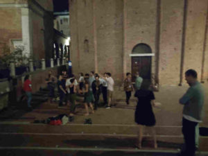
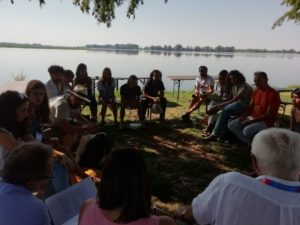
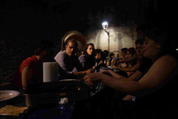
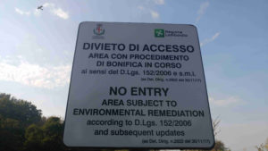
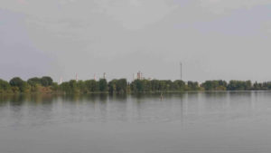
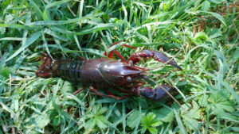
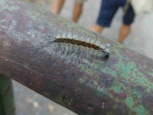
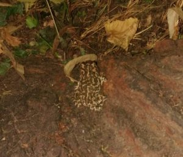
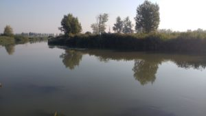

{#22} Un’altra “idea di Antropocene”

Cari gamberi della Louisiana, cari rospi smeraldini,
si è concluso da qualche kilosecondo Scienceground 8/5 — Scarti a Festivaletteratura. E sebbene le antropo-cene siano state molto partecipate, non è (solo) questo il senso che diamo alla nostra indagine.
Con questa mail iniziamo un percorso di restituzione delle atmosfere1 che si sono vissute a Mantova, e che già da un paio d’anni sono fortemente influenzate dai cicli delle acque dei suoi laghi.2



Esemplari di EXtemporanea innocens si riuniscono per svolgere alcune funzioni metaboliche fondamentali.«We find speaking of the Anthropocene, even speaking in the Anthropocene, difficult. It is, perhaps, best imagined as an epoch of loss — of species, places and people — for which we are seeking a language of grief and, even harder to find, a language of hope.»
Robert Macfarlane, Underland
Proprio di fronte alla città di Mantova, sulla sponda opposta del Lago Inferiore, sorge l’ex polo chimico: un insieme di raffinerie e impianti di lavorazione del petrolio che negli anni ’50 e ’60 ha fatto la fortuna economica della città. Ma sotto la superficie… il greggio è disceso — ritornato? — nel sottosuolo, infiltrando la falda acquifera, contaminando la terra, e minacciando le acque del Mincio. Il polo chimico — ora chiuso con accesso vietato — è un SIN, un sito di interesse nazionale, che in neolingua vuol dire: uno dei luoghi più inquinati d’Italia.3 E persino chi fa ricerca idrogeologica di mestiere non ha risposte: la bonifica al momento è impensabile.4

Ingresso vietato. Al di là giace l’area inquinata del SIN di Mantova (ex polo chimico). In realtà, il progetto di biorisanamento a cui fa riferimento questo cartello è fallito tempo fa.5
È difficile confrontarsi con “l’idea dell’Antropocene”.6 La sensazione di un mal di pancia ecologico talmente forte che non riusciamo a distogliere l’attenzione, neanche per pensare a come stare meglio. La disperazione è certa quando il futuro — anche quello “profondo” — sembra già scritto. Si fa strada un senso di perdita, una luttuosa nostalgia di possibilità perdute e precluse per sempre: per noi, e per chi verrà dopo di noi.

La sponda opposta del Lago Inferiore vista da Mantova. Si intravedono le torri dell’ex polo chimico. Laggiù, circa cinque metri sotto la superficie terrestre, il greggio si spande lentamente flottando sulla falda acquifera.7
Come fare quando gli spazi di speranza sembrano popolarsi dei residui tossici di un passato sbagliato? È facile scartare modalità di pensiero e di azione quando ci si convince che è finita. Ma forse questa è l’altra faccia della medaglia: quanto fa comodo la nostra disperazione a chi si impegna per mistificare la situazione, e continuare (quasi) come sempre? Forse chi si dispera è complice persino più efficiente di chi nega tout court il problema.8

Il gambero rosso “killer” della Louisiana, Procambarus clarkii.9 Estremamente vorace e adattabile, una volta fuggito dagli allevamenti ha colonizzato la maggior parte dei corsi d’acqua in Italia, esercitando una pressione insostenibile sulle specie autoctone. Con lui si è insediata nel Lago Superiore di Mantova un’altra famosa specie esotica introdotta dall’uomo: il fior di loto.10
Eppure… la nostra visione potrebbe essere limitata perché, circondate dagli scarti del nostro mondo, cerchiamo di saltare qua e là nei pochi spazi rimasti intonsi – anche se non lo sono e in fondo lo sappiamo.11 Un’incolumità presunta che riusciamo solo a pensare di “preservare”.12
Invece di spostare lo sguardo verso la landa desolata per capire cosa vi sta crescendo. E se sia possibile passarci attraverso, magari ricostruendo un’altra vita e un altro senso di comunità.

Un bruco di ifantria americana, Hyphantria cunea13, lungo la strada per il polo chimico. Questa specie esotica si nutre di foglie in grande quantità, lasciando al loro posto reticoli di filamenti.
A partire dalla consapevolezza degli infiniti scambi sotterranei fra funghi e piante quando si passeggia in un bosco14, fino all’osservazione di una compenetrazione indistinguibile fra “naturale” e “artificiale” quando si circumnavigano i laghi di Mantova15 – una diversa idea di stare al mondo riemerge dai margini delle nostre ecologie.
I luoghi inquinati del polo chimico sono rigogliosi di piante, insetti e specie acquatiche.16 La stragrande maggioranza di queste sono state introdotte – consapevolmente o no – dalla specie umana nel corso di qualche secolo, e ora vivono qui.17 C’è chi si sta impegnando per riformare una comunità – che include ed equipara creature umane e non-umane – intorno agli spazi e ai luoghi limitrofi18. Non tutto è perduto, non tutto è irrecuperabile. C’è anche chi si oppone ad opere e progetti che devasterebbero l’ecologia dei loro territori con la minaccia di nuovi spazi di rifiuto19
Una via si intravede allora, ma è difficile e bisogna calpestare lo schifo. Bisogna capire come viverci.
Non potremo forse liberarci del senso di perdita irrecuperabile, e saremo sempre un po’ tristi — come gli elfi della Terra di Mezzo20 — ma a noi la scelta non è data di astrarci dalla natura. Di uscirne. La natura siamo noi e quello che produciamo. Se quello che produciamo è merda, ebbene: non ne usciremo da sole, ma anche con l’aiuto di altri esseri, se saremo disposte a riconoscere il loro co-esistere, il loro co-abitare.21

Il rospo smeraldino italiano, Bufotes balearicus.22 Si tratta di una specie nativa. Proprio in corrispondenza del confine fra Lombardia e Veneto, l’areale di questo rospo si confonde con quello del parente rospo smeraldino europeo, Bufotes viridis. In questa zona, le due specie possono accoppiarsi e creare ibridi.
E allora, l’idea dell’Antropocene è quella di uscirne. Scartare l’Antropocene e i suoi cicli interrotti di devastazione, le sue logiche, le limitazioni che impone alla nostra immaginazione.
Ripartire dalla merda. Un manifesto?
«The ruin glares at us with the horror of its abandonment. It’s not easy to know how to make a life, much less avert planetary destruction. Luckily there is still company, human and not human. We can still explore the overgrown verges of our blasted landscapes — the edges of capitalist discipline, scalability, and abandoned resource plantations. We can still catch the scent of the latent commons — and the elusive autumn aroma.»
Anna Lowenhaupt Tsing, Il fungo alla fine del mondo

Le paludi del Mincio a Rivalta. La forma di questo ambiente – ora strabordante di fertilizzanti agricoli – è stata modellata da circa un millennio di interventi umani, ma è co-costruito da altre specie. Le piante che si intravedono sotto la superficie dell’acqua portano ossigeno in profondità e garantiscono un habitat a piccoli pesci e crostacei.23Note
Lucilla Barchetta, in L’era del Garbage Patch, circa 50’00”.↩︎
Tutte le foto incluse in questa newsletter sono state scattate a Mantova e dintorni nei giorni del festival (8-12 settembre 2021). Le identificazioni delle specie riportate sono state confermate con l’app iNaturalist.↩︎
Descrizione del SIN di Mantova sul sito di ARPA Lombardia.↩︎
Gli studi sull’inquinamento e la bonifica del SIN di Mantova sono portati avanti dall’università di Milano-Bicocca e da quella di Parma. L’opinione sull’attuale impossibilità tecnica è dell’idrogeologo Daniel T. Feinstein (USGS).↩︎
Tratto dalla Via Fluminis 2021, a cura di Maria Elena Antinori, Università di Parma. Il biorisanamento è un tipo di bonifica che si avvale, per esempio, dell’attività microbica per metabolizzare composti inquinanti, degradandoli.↩︎
“The idea of Anthropocene” piuttosto che semplicemente “Anthropocene” è un’espressione usata da Robert Macfarlane nel suo corso di environmental humanities a Cambridge (comunicazione personale).↩︎
Tratto dalla Via Fluminis 2021, a cura di Marco Bartoli (Università di Parma).↩︎
Cfr. per esempio il video “Climate grief” di Philosophy Tube.↩︎
Cfr. la voce Wikipedia.↩︎
Articolo del Corriere della Sera sul centenario dei fiori di loto a Mantova.↩︎
Cfr. per es. “Fathoms: the world in the whale” di Rebecca Giggs.↩︎
Sul paradigma del conservazionismo si è scritto molto. Cfr. per es. “The conservation revolution” di Bram Büscher e Robert Fletcher, oppure “Une écologie décoloniale” di Malcom Ferdinand (italiano qui).↩︎
Cfr. la voce Wikipedia.↩︎
Sulle reti micorriziche, aka il “wood wide web”, si è scritto molto. Cfr. per es. “Underland. Un viaggio nel tempo profondo” di Robert Macfarlane, “Il fungo alla fine del mondo. La possibilità di vivere nelle rovine del capitalismo” di Anna Tsing, oppure “Entangled Life: How Fungi Make Our Worlds, Change Our Minds & Shape Our Futures” di Merlin Sheldrake.↩︎
Tratto dalla Via Fluminis 2020, a cura di Marco Faggioli (ingegnere ambientale).↩︎
E la cosa non sorprende.↩︎
Tratto dalla Via Fluminis 2021, a cura di Marco Bartoli e Rossano Bolpagni (università di Parma). Per esempio, l’introduzione della robinia (Robinia pseudoacacia) è vecchia di secoli, mentre quella della ludwigia (Ludwigia grandiflora) risale a qualche anno fa. Il fiore di loto è a Mantova da un secolo. In acqua, oltre al già citato gambero “killer”, si fanno notare la gambusia (Gambusia affinis), introdotta perché si nutre delle larve di zanzara, e la successiva espansione del pesce siluro (Silurus glanis), introdotto per la pesca. Fra l’altro, Marco Bartoli ci ha spiegato che il pesce siluro preda la gambusia, e questo ha determinato un aumento delle zanzare.↩︎
Per esempio l’associazione mantovana R84 Multifactory sta tentando di recuperare alcuni spazi intorno al SIN con opere di piantumazione e sentieri per bicicletta (tratto dalla Via Fluminis 2021). Oppure, i giovani gestori della malga Movlina in Val d’Algone (Trento) hanno deciso in controtendenza di optare per una produzione totalmente vegetariana (comunicazione personale). Le acque della Val d’Algone, che si immettono nel Sarca che poi diventa il Mincio, sono le stesse che bagnano Mantova.↩︎
Per esempio la comunità del fiume Chiese si oppone alla realizzazione di un depuratore sul lago di Garda che scarichi a monte del fiume. Un simile depuratore esiste già a Peschiera del Garda e scarica nel Mincio: da quando è in funzione, l’ecosistema fluviale a valle si è impoverito moltissimo (Marco Bartoli, comunicazione personale). Il più famoso esempio italiano di protesta di questo tipo è il movimento No Tav.↩︎
“Il Signore degli Anelli” di J.R.R. Tolkien. Quest’opera ha una forte impronta ecologista che risuona al giorno d’oggi.↩︎
Cfr. per es. “Staying with the trouble” di Donna Haraway.↩︎
Cfr. la voce Wikipedia.↩︎
Tratto dalla Via Fluminis 2020, a cura di Marco Faggioli e Marco Bartoli.↩︎